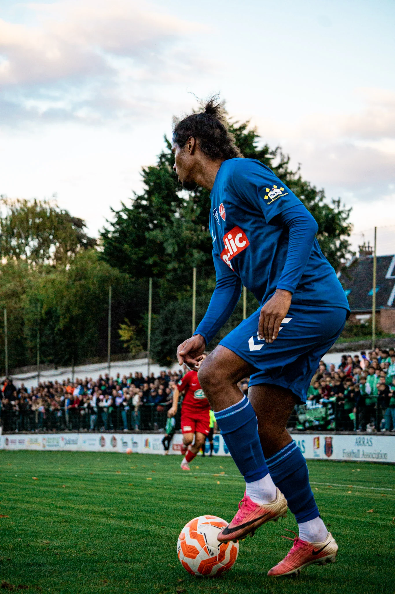

← Toutes les réalisations
CS Habarcq
Reportage · Coupe de France
CS Habarcq
- Valenciennes
Faire défiler
pour voir la série ↓
CompétitionCoupe de France
LieuArras
Série · 17 images
Le match
en images.
Glisser pour parcourir la série · Cliquer pour agrandir
Un projet à couvrir ?